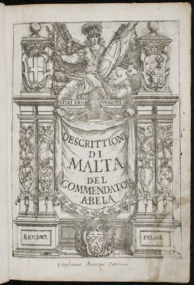

Della descrittione di Malta - 1647

Introduction
This article contains translated extracts from Della descrittione di Malta. The translation is not complete, or professional by any means. It is also incomplete in some areas, the Latin could not be translated. This translation was done by my friend Zach, who can read and write in Italian. The book was originally written in Italian in 1647. You can read the original book on the Library of Congress website or the Internet Archive.
Preface
Wanting to leave the world some testimony of my total devotion towards His Eminence V, I gladly consecrate to his name these compositions of mine. I know very well how little proportion they have with his great merit; but such, which they are, I trust in the goodness of H.Em V that if not another, he will be proud of recognising at least in the black of their ink, the whiteness of my experienced faith, and of my servile affection. The first aim in my efforts present was the desire to pass down to the future by their means precise information of things of this island of Malta, today just as famous among the people, for the stay of his sacred, and unrivaled religion, as fortunate, and happy for his extremely cautious rule. And to whom (in true) needs a work like this, if not to H.Em. V that of the island the same is main, and director? Rather which greatest luck I could desire them, as much seeing it under the extremely [ADJECTIVE] wings of an eagle, that lifts itself up well often until it perishes of the sun, and of the most sublime glory to provide itself light, and some lightning, not letting me doubt myself, that it not be to contribute kind influences of protection to them, and not give them yet with their spenders that eminence, that it is not able to produce from my overly dark pen. Other than having the glorious ancestors of his imperial family of LASCARIS already held as the possession of the imperial west, and expanded the scepter also to this island my Patra, is well right, that now it continue, and it double to the Ln.V in my writings, that it appreciates them although kindly H.Em.V (that I implore of it.) And praying to the Lord God to conserve his eminent person and to thank him always greatly, I do this with a deep courtesy.
About the Journey of the First Greeks in Malta - 4th Report
A true philosophical doctrine, that Bonum est, quod omnia appetunt, so it is, that man given by God of judgement, and of conversation, recognising this goodness in things, to those blazingly breathe, and the yearnings to rejoice to the highest. The island of Malta being enriched by heaven of many goods, be not a wonder, that so many Phoenicians had voluntarily lived them than to leave them, and eradicating them had been dismissers taking force, and the Greek valour. After having the Phoenicians relished, and having possessed these islands of ours (448.) and more years, and after the miserable fall of Troy, the Greeks had come by to Malta on their first journey, that were in Sicily, according to the testimony, that was given by Thucydides.
[LATIN STUFF]
The text exposing Philipp Klüver of Varied names of Sicily and its inhabitants, having first discussion of the opinion of Philistus, and of Appaiano arounf the time, & the moment of the construction of Carthage, that these times it had been the year 50. Despite the Trojan War, and those of the year 31. argument removed of weight from which is read in Lycophron in Alexandria, of the daughters of Egestes son of noble Trojan Crinisus, that were given by King Laomedote to the foreign traiders to bring them into foreign countries, that from those were thereafter brought to Sicily, intending, that the precidctions of the foreign trader were not others, that the Phoenicians of Thucydides, says these words.
[MORE LATIN STUFF]